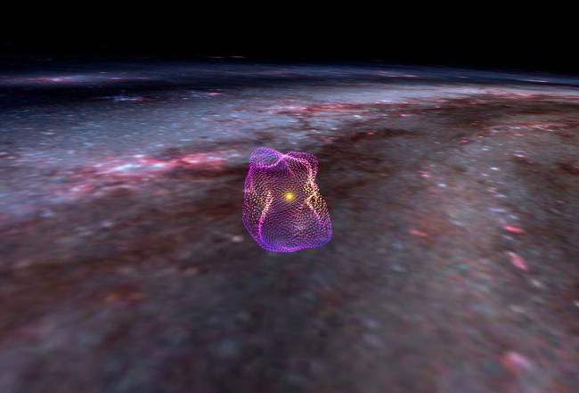

Predecir el futuro es un negocio arriesgado en la ciencia, pero si observamos la evolución a largo plazo del Sistema Solar, los astrónomos y los científicos planetarios tienen una idea razonable de cómo resultará. No es como si supiéramos lo que sucederá a las 10:04 p. m. del 12 de noviembre del año 88,000,001,955. Pero estadísticamente, podemos esperar que ocurran ciertos eventos.
Nuestro Sol es una estrella de tipo G actualmente en la llamada secuencia principal. Esto significa que está fusionando hidrógeno en su núcleo convirtiéndolo en helio. Actualmente es de mediana edad, habiendo estado brillando durante unos 5 mil millones de años. Lo que sucede a continuación para el Sol se ha visto en muchas otras estrellas.
Durante los próximos 5 mil millones de años, el Sol se calentará más. El proceso será lento, pero sin duda afectará al Sistema Solar. La Tierra se verá afectada de muchas maneras diferentes. Un aumento de las temperaturas provocará un aumento de la meteorización de los silicatos, lo que ralentizará el ciclo del carbono. Esto afectará a muchas plantas, pero no a todas, pero las que queden no permanecerán allí por mucho tiempo. Eventualmente, no habrá más plantas y la cadena alimenticia colapsará. Eso podría suceder en unos 600 millones de años.
Los agujeros negros supermasivos activos son más poderosos de lo que habíamos imaginado
En el centro de casi todas las galaxias se encuentra un agujero negro supermasivo. Y si se alimenta continuamente, se le conoce como Núcleo Galáctico Activo, o AGN. Los AGN son la fuente de energía constante más compacta del universo, y una nueva investigación sugiere que los científicos han subestimado la cantidad de energía emitida por estos objetos cósmicos extremos.

Credito de imagen: Theo O'Neill / telescopio mundial
Es fácil imaginar que cualquier cosa distintiva sobre la ubicación de nuestro Sistema Solar debe estar conectada con nuestra aparente singularidad. Sin embargo, las superburbujas como la nuestra no son particularmente raras; de hecho, la galaxia tiene suficientes como para provocar comparaciones con el queso suizo. Son dejados atrás por explosiones de supernovas que expulsan gas y polvo de las regiones circundantes. El material barrido por la explosión se concentra en la superficie de la burbuja, todavía tan delgado que se consideraría un vacío según los estándares terrestres, pero lo suficientemente denso como para desencadenar la formación de estrellas.
La elaboración de este mapa 3D de la burbuja local nos ayudará a examinar las superburbujas de nuevas formas, dijo Theo O'Neill, del Centro de Astrofísica | Harvard & Smithsonian, en un comunicado. Inusualmente, O'Neill llegó a liderar el proyecto cuando aún era estudiante en la Universidad de Virginia.
Espacio y Fisica: Otras Noticias
Fascinante time-lapse muestra el sol durante 133 días
Se reveló por primera vez que ExxonMobil sabía sobre el cambio climático en 2015 a través de una serie de artículos llamados Exxon: The Road Not Taken de Inside Climate News, que investigaba cómo el gigante de los combustibles fósiles ya tenía una gran cantidad de evidencia del calentamiento global y el cambio climático en el fines de la década de 1970 y principios de la de 1980. El grito de llamada del movimiento para promover la conciencia de la revelación se convirtió en "ExxonKnew".
Un hidroavión para la luna de Saturno e incluso ideas más salvajes obtienen fondos de la NASA
La NASA ha publicado un video increíble utilizando 133 días de observaciones del Observatorio de Dinámica Solar.
Los extraterrestres no se molestarán en ponerse en contacto con la Tierra, no hay señales de inteligencia, sugiere la solución de la paradoja de Fermi
La Tierra quizás no sea lo suficientemente avanzada tecnológicamente como para valer el tiempo de los extraterrestres, y los terrícolas, por lo tanto, son de poco interés, propone el documento, que aún no ha sido revisado por pares. Los extraterrestres, si existen, probablemente estén mucho más preocupados por encontrar signos de tecnología que signos de vida y, por lo tanto, es posible que nos hayan estado pasando por alto todo este tiempo.